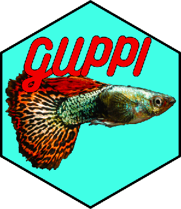

Process TDPortal and ProSightPD top-down reports (.tdReport files) by retrieving information from UniProt and filtering by false detection rate. TDViewer is also highly recommended for viewing top-down reports.
The easiest way to use the functionality of GUPPI by accessing the GUPPI web application.
The processing of tdReports is carried out by the guppi() function. An example of running the function:
library(GUPPI) guppi( "C:/Users/David Butcher/TDReports", c( "20200420_Excellent_TDReport_01.tdReport", "20200420_Excellent_TDReport_02.tdReport" ), 83333, GOLocType = "bacteria", fractionAssignments = NULL, outputdir = "C:/Users/David Butcher/guppi_output", fdr = 0.01, saveOutput = TRUE, makeDashboard = TRUE )
Arguments to the guppi function are as follows:
filedir Add the path to the folder containing tdReports to be processed. This directory can be at any level above the tdReports in the directory structure.
filename Full name of the tdReport file or files, including extension. Must match the name of file exactly.
taxon_number NCBI taxon number to use for adding UniProt data. Should match the taxon number from the TDPortal/ProSightPD analysis.
outputdir Directory to place output files. Directory will be created if it doesn’t exist, but parent directory must be an existing folder.
GOLocType Name of taxon to use for determination of subcellular locations. Acceptable values are “bacteria” or “eukaryota”.
fractionAssignments Optional argument. A named list with names set to the fraction numbers of the input files and values set to the input file names. If left blank, GUPPI will attempt to assign fraction numbers automatically from file names in the tdReport.
fdr False detection rate to use for filtering results. Defaults to 1%.
saveOutput Boolean value. Controls whether protein report, proteoform report, etc. are saved to output directory. Doesn’t effect GUPPI report. Defaults to TRUE.
makeDashboard Boolean value (TRUE or FALSE) which controls whether an HTML report is generated. Defaults to FALSE.
dashboardPath Full path and name of dashboard output (i.e. GUPPI report). Defaults to saving to the /report subdirectory of the output directory.
A connection is established to the SQLite database in the TD Report using RSQLite. All protein-level (or isoform) and proteform-level IDs and other relevant data for each ID are extracted. The taxon number is checked against files in the package directory to see if a corresponding UniProt taxon database has already been downloaded. If not, the UniProt web service is queried for all UniProt accession numbers in the taxon using the package UniProt.ws. Protein name, organism, organism taxon ID, protein sequence, protein function, subcellular location, and any associated GO IDs are returned. Note that some of these values may not be found and come back as empty or NA.
The UniProt taxon database is used to add information for all IDs extracted from the tdReport. GO terms are obtained for all GO IDs using the GO.db package and terms corresponding to subcellular locations are saved in column “GO_subcellular_locations”. Average and monoisotopic masses are determined from the protein sequence (intact sequence for isoform-level IDs and proteoform sequence for proteoform-level IDs) using the Peptides package.
Minimum Q value from among all hits, average and monoisotopic masses, and data file for lowest Q value hit are obtained for all proteoforms. Proteoforms whose Q values are above the FDR cutoff are deleted. Proteoforms whose corresponding protein isoform entry is above the FDR cutoff are also deleted, as in the TDViewer software.
The “main” output includes Q values, observed precursor masses, data files, subcellular locations from the GO database and a variety of other parameters for all protein and proteoform IDs. All protein and proteoform IDs with Q values which are missing or greater than the cutoff value (fdr) are deleted.
Output files are saved to the output directory (outputdir). Files are timestamped with the time the script was initialized or share the same name as the input file.
outputdir/protein_results/YYYYMMDD_hhmmss_protein_results.xlsx.outputdir/proteoform_results/YYYYMMDD_hhmmss_proteoform_results.xlsx.outputdir/protein_results_allhits/{filename}_allhits.xlsx.outputdir/protein_results_countsbyfraction/YYYYMMDD_hhmmss_countsbyfrac.xlsx.makeDashboard is set to TRUE, an HTML report is saved to outputdir/report.Package dependencies are listed in the Imports section of the DESCRIPTION file and include packages from CRAN, Bioconductor, and Github.
Package developed by David S. Butcher and licensed under CC BY-NC 4.0.